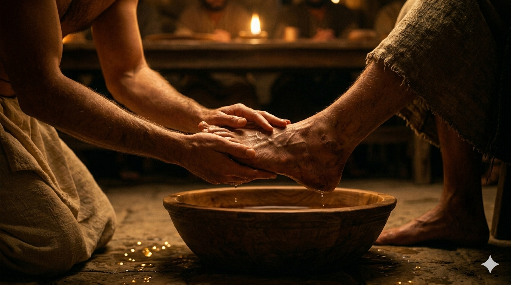

다락방 만찬 자리, 무릎 꿇으신 한 분 앞에 발을 거두며 물러서는 베드로의 얼굴.
시몬 베드로에게 이르시니 베드로가 이르되 주여 주께서 내 발을 씻으시나이까. 예수께서 대답하여 이르시되 내가 하는 것을 네가 지금은 알지 못하나 이 후에는 알리라. 베드로가 이르되 내 발을 영원히 씻지 못하시리이다. 예수께서 대답하시되 내가 너를 씻어 주지 아니하면 네가 나와 상관이 없느니라. — 요한복음 13:6-8
유월절 전날 밤, 예수께서는 제자들과 마지막 만찬 자리에 앉으셨습니다. 요한은 이 장면을 기록하기에 앞서 한 문장을 조용히 써 둡니다 — "세상에 있는 자기 사람들을 사랑하시되 끝까지 사랑하시니라." 그 끝까지의 사랑이 구체적으로 표현된 첫 행동이 바로 발 씻김이었습니다. 일어나 겉옷을 벗으시고 수건을 두르신 한 분은 대야에 물을 떠서 제자들의 발을 차례로 씻기기 시작하십니다. 발 씻김은 그 시대에 가장 낮은 종, 심지어 유대인 종에게도 시키지 않았던 이방인 종의 일이었습니다. 그 일을 랍비이시며 선생이신 한 분이 무릎을 꿇고 친히 하고 계십니다.
베드로에게 차례가 돌아왔을 때, 그는 발을 거두며 물러섭니다. "주여 주께서 내 발을 씻으시나이까." 이 말 속에는 베드로의 진심이 담겨 있습니다. 섬김을 받는 것에 익숙하지 않은 자존심도 있었고, 거룩하신 분이 자기 같은 사람의 먼지 묻은 발을 씻기신다는 것에 대한 경외감도 있었을 것입니다. 그러나 주님의 대답은 단호합니다 — "내가 너를 씻어 주지 아니하면 네가 나와 상관이 없느니라." 섬김을 거부하는 것이 겸손이 아니라, 주님과의 연결을 거부하는 것임을 말씀하십니다. 베드로는 즉시 방향을 바꿉니다 — "주여 내 발뿐 아니라 손과 머리도 씻겨 주옵소서." 이처럼 베드로의 마음은 두 극단을 오가지만, 그 근저에는 언제나 주님을 향한 뜨거운 열심이 있었습니다.

대야 앞에 무릎 꿇으신 한 분의 손이 베드로의 거칠고 큰 어부의 발을 감싸 쥔 순간.
우리는 종종 섬기는 것에는 열심이지만 섬김을 받는 것을 불편해합니다. 특히 믿음이 뜨거운 사람일수록 "내가 도와야지, 내가 베풀어야지"는 자연스럽지만, 누군가 나를 위해 무릎을 꿇을 때 손사래 치며 물러서기도 합니다. 그러나 오늘 주님의 말씀을 기억하십시오 — 섬김을 받지 못하는 사람은 주님과의 깊은 연결을 놓칠 수 있습니다. 때로는 도움을 받아들이는 것이, 주님의 사랑이 내 삶에 실제로 흘러들어오도록 문을 여는 믿음의 행위입니다.
또한 이 장면은 섬김의 방향에 대해 도전합니다. 주님은 가장 높은 자리에서 가장 낮은 자리로 내려오셨습니다. 우리가 섬김이라고 부르는 것들이 혹시 내가 편한 방식, 내가 자랑스러운 방식으로만 이루어지고 있지는 않은지 돌아볼 필요가 있습니다. 진정한 섬김은 때로 무릎을 꿇고 상대방의 가장 초라한 자리까지 내려가는 일입니다. 오늘 내 삶에서 그런 섬김이 필요한 한 사람이 있다면 누구일지 생각해 보십시오.
섬김을 거부하는 것이 겸손이 아닙니다.
주님이 무릎 꿇고 씻겨 주시려 할 때 발을 내밀 수 있는 사람이 되십시오.
그리고 당신도 누군가의 발 앞에 무릎을 꿇어 보십시오.